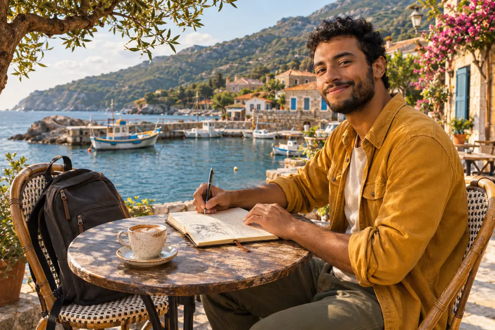

THE WORLD, THROUGH KAI’S EYES
Collect moments.
Keep the feeling.
Coastal detours. Slow mornings. Beautiful wrong turns.
A personal journal for a life a little less ordinary.
 Hey, I’m Kai.One backpack. Still figuring it out.↗
Hey, I’m Kai.One backpack. Still figuring it out.↗THE CAMERA ROLL / SIX LITTLE ESCAPES
Some days deserve
more than a story.
The sand in my shoes. The road I nearly missed. The coffee that went cold because the view was too good.
Swipe through the moments. Tap one to stay a little longer.
OPEN A LITTLE WINDOW INTO MY WORLD
Stay for
the stories.
Small moments. A curious traveller.
Pick a mood. Find your next escape.

A NOTE FROM THE OTHER SIDE OF THE SCREEN
Less keeping up.
More being here.
I’m Kai. I go places, take too many photographs, and write down the things I don’t want to forget. This is my little corner of the internet. Make yourself at home.
Meet the person behind the pictures ↗A POSTCARD FOR YOUR INBOX
A slower kind
of Sunday.
A new story, a favourite place, and one small reason to step outside. A letter worth making coffee for.
Try the demo signup · No emails sentYOUR STORIES DESERVE A HOME
Beautiful for readers.
Useful for creators.
A blog should do more than look good. Give your work a place to be found, your readers a reason to return, and future collaborators a way to reach you.
Make your archive discoverable.
Search, topics and reading lists keep good stories within reach.
Spend more time creating.
Explore planning, editing and community moderation in the demo studio.
Build your own corner of the internet.
Talk to Alienway about your journal, newsletter and brand collaborations.
MARGIN is a demonstration. Studio changes stay in this browser; mailing and collaboration services require connection for a live client website.